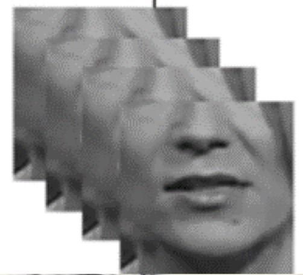
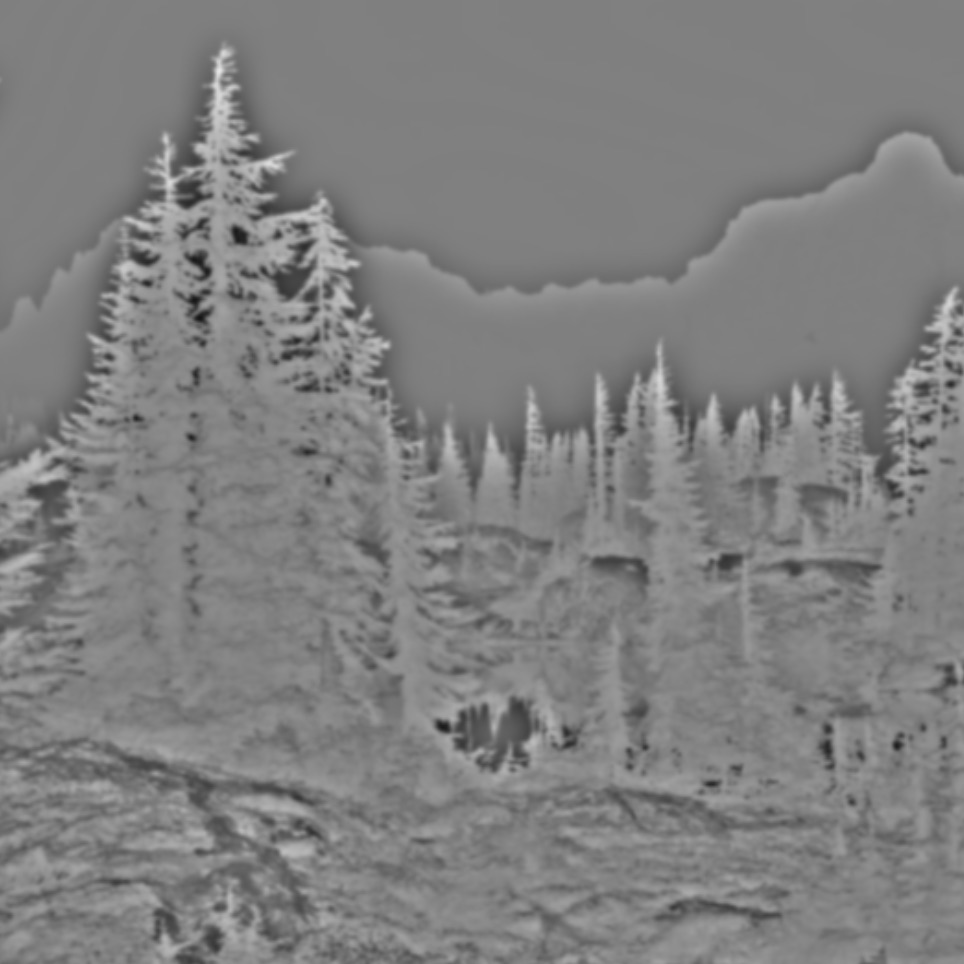

|
Kocsis David I'm a computer science student interested in artificial intelligence, machine learning, and software engineering. I enjoy working on projects that involve deep learning, computer vision, and creating practical applications. |
ProjectsHere are some of my personal projects covering various areas of computer science including AI, computer vision, and software development. |
|  |
LipReadingModel
Python, 2024 GitHub A machine learning model for lip reading using deep learning techniques. This project explores computer vision and natural language processing to interpret speech from visual lip movements. |

|
QNNeval - Quantum Neural Network Evaluation
Jupyter Notebook, 2024 GitHub Research and evaluation of Quantum Neural Networks, exploring the intersection of quantum computing and machine learning. |
|  |
Gausss
Java, 2023 GitHub Java app exploring Gaussian Filters and their applications in image processing. |
|
Website template based on Jon Barron's design. |